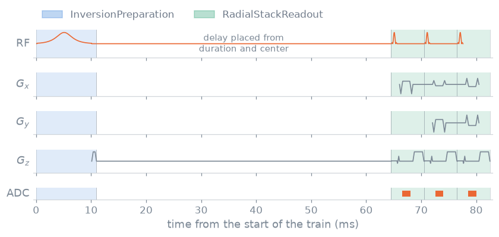

Sequence modules and functions#
TL;DR
A sequence module designs one reusable part of a repetition and reports its blocks, its duration and a timing reference,
center.A sequence function
sequence(system, **protocol)is a complete acquisition; its protocol is read from its signature and docstring.Scripts, the command line and a protocol editor all drive the same function.
A gradient-echo, an MPRAGE and a stack-of-stars share their excitations,
inversions and readouts. pypulseqpp designs each part once, as a module, and
leaves the loop over views to a function you write. Neither is part of the
file format: what they produce is an ordinary .seq file. Which views are
acquired, and in what order, is the subject of
Sampling and ordering.
Capabilities#
Designs a reusable part of a repetition and publishes its events by name.
Show code and tests
Code:
SequenceModule,RfModule. Tests: an event played many times is published once; blocks are the published events in play order; publication reaches every init module in the chain (test_design_module.py).Reports the module’s blocks, duration and
center, so that the loop can place it in time.Show code and tests
Code:
blocks,duration,center. Tests: duration and center describe the module (test_design_module.py); the echo time is measured between the outer pulse centres (test_design_preparation.py).Lets the loop change a published event before it is added to a block.
Show code and tests
Code:
module.events,module.rf. Test: mutating a published event shows through the blocks (test_design_module.py).Ships excitation, preparation and readout modules for the sequence catalogue.
Show code and tests
Code:
SpatialSelectiveExcitation,InversionPreparation,T2Preparation,RadialStackReadout; the others are listed in Sequence modules. Tests: every shipped module documents exactly the parameters it takes; a module reports the arguments of its init module (test_design_module.py).Refuses a module that adds no blocks, or that builds an upstream
Sequence.Show code and tests
Code:
SequenceModule.init_module. Tests: an incomplete module is refused; an upstream sequence is refused (test_design_module.py).Answers the module’s analyses from its stored sequence.
Show code and tests
Code:
module.check_timing,module.calculate_kspace,module.waveforms_and_times,module.paper_plot. Test: analyses are answered by the inner sequence (test_design_module.py).Reads a sequence function’s protocol from its signature and NumPy
Parameterssection.Show code and tests
Code:
parameters(),ProtocolParameter. Tests: the system is not a protocol parameter; a parameter carries its type, default, unit and description; the choices of a parameter are the values its type lists in order (test_sequence_function.py).Requires every shipped function to take the system first, state its limits and lower, never raise, the system’s.
Show code and tests
Code:
cap_system(),MAX_GRAD,MAX_SLEW. Tests: a function takes the system first and the protocol as keywords; a function states the limits it holds the system to; a function lowers the system to its limits and never raises it (test_examples.py).Writes only the label events a block changes, as a SET or an INC.
Show code and tests
Code:
Labels,evaluate_labels(). Tests: a block carries only the label events it changes; a restart writes every label again as a set (test_sequence_function.py); the answer is the toolbox’s (test_evaluate_labels.py).Writes a list of sequences, prescans first, as files linked by
NextSequence.Show code and tests
Code:
write(),duration(). Tests: a chain is written with next sequence links; a chain whose names repeat writes one file per sequence; a link is recorded in the files and not on the sequences; duration sums the chain (test_sequence_function.py).Derives command-line options and help from the same signature.
Show code and tests
Code:
pypulseqpp.cli.run(). Tests: cli flags come from a function signature; the cli writes a function chain; the cli reports every sequence a function returns (test_sequence_function.py).Designs a complete sequence for each family of the catalogue, with a reference page each.
Show code and tests
Code: Sequence catalogue. Tests: the catalogue classifies every shipped sequence exactly once; every sequence has a gallery page that designs it (
test_docs_sequences.py); every sequence a zoo entry builds passes its timing check (test_examples.py).Refuses a prescription the design cannot meet, and records what it designed.
Show code and tests
Code: the definitions a function sets, such as
TE. Tests: a shorter echo than the readout admits is refused; a function designs the definitions it wrote again from them (test_examples.py).
Division of responsibility#
Builds its protocol editor from the same record. It calls
parameters()on the function and shows each parameter with its unit, choices and description.Calls the function on the scanner with the scanner’s limits. The function is designed under the
Optsthe scanner sends; segmentation and execution are Pulserver’s.
Method#

One inversion and the start of its radial train, built from lesson 9’s
modules. The loop adds inversion.blocks, a delay, and readout.blocks once
per spoke, the readout’s blocks opening with the excitation; each module’s RF
is drawn to its own peak.#
Module timing reference#
center is the module’s timing reference in seconds from its start, usually
an RF pulse centre or an echo. For an inversion module followed by an
excitation module, the delay that gives an inversion time \(T_I\) is
so the timing composes through pulse centres and does not depend on where the blocks begin or end.
Event templates#
A published event is a template: the loop sets an RF phase offset or scales
a phase-encode gradient on it, and adds the blocks. Blocks already added to a
sequence are not changed. A readout built with te=None takes its shortest
realizable echo time, and the module reports the bandwidths and times it
achieved after rounding them to the rasters.
Sequence chains#
Each file of a chain keeps one period for
repetition() and the analyses built on it, while
NextSequence joins the files into one acquisition. The files are named as
write() describes.
The rules, the naming of chain files and the parsing of the protocol are in Sequence module and function internals.
Examples#
8. Sequence functions: the radial MPRAGE as a function, its protocol and its command line.
9. Sequence modules: the same function built from three modules.
10. Custom sequence module: a module of your own.
Sequence catalogue: the catalogue of shipped sequence functions.
Sequence modules, Sequence functions and Command-line helpers: the objects.